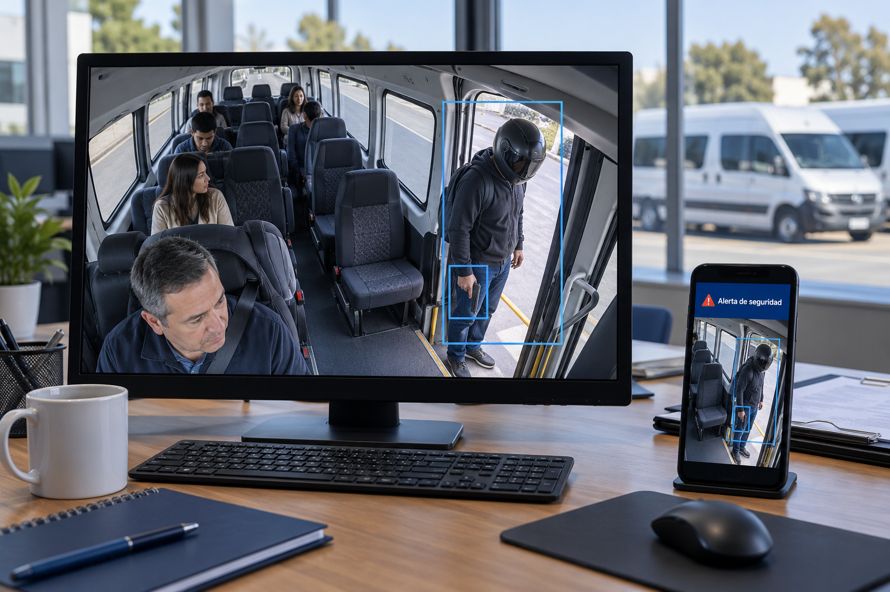
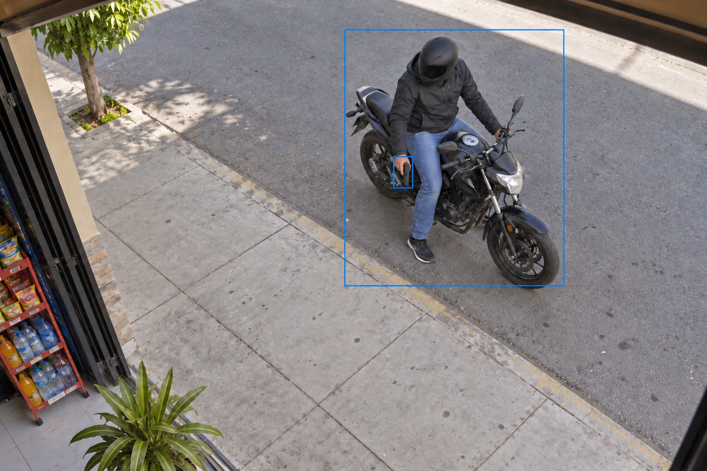

Seguridad con IA · Detección de armas
Detección de pistolas, granadas y otras armas con IA
Su cámara reconoce armas y objetos peligrosos, activa una alarma sonora local y envía de inmediato una foto con recuadros a los dueños y al personal de seguridad. Pensado para bodegas, pequeños negocios y choferes.
- Pistolas
- Granadas
- Alarma local
- Mensaje con foto

Qué detecta
Pistolas y revólveres
Reconoce armas cortas de fuego visibles ante la cámara, en la mano de una persona.
Granadas
Identifica granadas y otros objetos peligrosos que aparezcan en la imagen.
Otras armas de fuego
Reconoce también armas largas, según el modelo que se configure para su caso.
Persona armada
Relaciona al arma con la persona, para que vea quién la porta y dónde está.
El conjunto exacto de armas y objetos que reconoce se define y se prueba con su cámara durante la demostración.
Una alerta clara, no una sospecha
Marca a la persona
Un recuadro rodea a la persona o al vehículo, para ubicarla de un vistazo.
Marca el arma
Otro recuadro señala el arma detectada, para que vea qué disparó la alerta.
Envía la foto
La imagen con los recuadros llega al celular de los dueños y del personal de seguridad.

La detección depende de la calidad de imagen, el ángulo y la distancia de la cámara. Es una herramienta de apoyo: ante una emergencia, llame a las autoridades.
Todo en una sola solución
Alerta automática
Apenas la IA reconoce un arma, dispara la alerta sin que nadie tenga que pulsar un botón.
Alarma sonora local
Una alarma en el lugar disuade al delincuente y avisa de inmediato a vecinos y habitantes.
Mensaje con foto
La foto con el arma marcada llega al celular de uno o varios dueños y al personal de seguridad.
Verificación humana
Una persona confirma la imagen antes de actuar, para evitar reacciones por una falsa alerta.
Costo asequible
Un precio accesible para bodegas, pequeños negocios y choferes, sin equipos complejos.
Historial de incidentes
Consulte las alertas pasadas con fecha, hora y la imagen de cada detección.
Cómo funciona
Mira
La cámara de su local o unidad envía el video al sistema.
Reconoce
La IA analiza el video de forma continua en busca de pistolas, granadas y otras armas.
Alerta
Si reconoce un arma, activa la alarma local y envía la foto con los recuadros.
Decide
Usted y su personal verifican la imagen y deciden cómo actuar.
¿Dónde se usa?
Bodegas y minimarkets
Alerta al dueño y al vecindario ante una persona armada en la puerta.
Tiendas y pequeños negocios
Seguridad con IA sin personal de vigilancia permanente.
Choferes y transportistas
Aviso con foto para quien trabaja en ruta y lleva carga valiosa.
Colegios y recintos
Apoyo al personal de seguridad en accesos y entradas.
Tecnología con responsabilidad
La persona decide
La IA propone y usted confirma con la foto. Ninguna decisión queda solo en manos del sistema.
Privacidad
Las imágenes se usan solo para la seguridad del servicio, según nuestra Política de Privacidad.
Apoyo, no reemplazo
No sustituye a las autoridades ni al personal de seguridad.
Preguntas frecuentes
¿Qué armas detecta?
Está pensado para reconocer pistolas y revólveres, otras armas de fuego y objetos peligrosos como granadas. El alcance exacto se define en la demostración según su caso.
¿Detecta granadas?
Sí está contemplado, siempre que el objeto sea visible ante la cámara. La precisión depende del modelo configurado, la calidad de imagen y el ángulo; lo probamos con su cámara.
¿Qué pasa si la persona lleva casco o cubre el arma?
La detección depende de que el arma sea visible para la cámara. Si queda cubierta, el sistema puede no reconocerla; por eso es una herramienta de apoyo.
¿Puede confundir un objeto con un arma?
Ningún sistema es perfecto. Por eso cada alerta llega con una foto y recuadros para que una persona la verifique antes de actuar.
¿Necesito comprar cámaras nuevas?
Evaluamos si sus cámaras actuales son compatibles. En la demostración revisamos su caso y le indicamos qué necesita.
¿Reemplaza a la policía o al personal de seguridad?
No. Ante una emergencia debe contactar a las autoridades.
¿Cuántos celulares reciben el mensaje?
Uno o varios. Usted define la lista de dueños y de personal de seguridad.
¿Cuánto cuesta?
Buscamos un costo asequible para negocios pequeños. El precio depende de su caso y se detalla en la demostración.
Importante: este sistema es un apoyo y no garantiza detectar todas las situaciones. Ante una emergencia, llame a las autoridades.